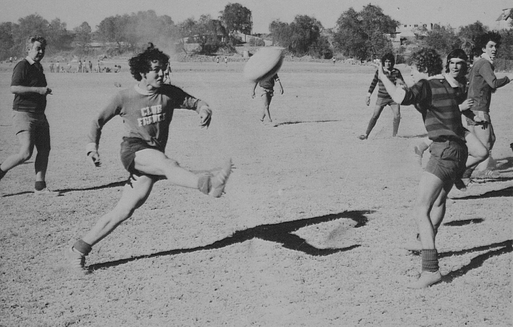

La historia del rugby se inicia en 1823, cuando un estudiante de la Rugby School, el inglés William Webb Ellis, hizo trampa durante un partido de fútbol primitivo y el juego evolucionó adoptando reglas diferentes. En 1864 se produjo la separación de los deportes, ya que hasta entonces eran el mismo. Argentina vs. Nueva Zelanda, noviembre de 1985. Desde entonces el rugby adquirió un gran filtro en las Islas británicas y territorios que fueron colonias del Imperio Británico, como Australia, Nueva Zelanda y Sudáfrica.
Fuera de estos territorios, Francia ha sido el país con mayor desarrollo y en América, también entre los países de habla hispana, el rugby encontró su mayor desarrollo en Argentina. En 1886 se fundó la International Rugby Board, hoy redenominada como World Rugby, que es la máxima rectora de este deporte a nivel mundial. En 2017 contaba con 117 uniones nacionales miembros. El primer partido internacional se jugó en 1871 entre las selecciones de Escocia e Inglaterra.
En 1882 ambas, más Gales e Irlanda comenzaron a disputarse el Torneo de las Cuatro Naciones y significó el primer crecimiento internacional. Hoy en día se realiza cada cuatro años la Copa del Mundo, la tercera competición que más recauda globalmente, desde 1987. El rugby femenino inició en la primera mitad del siglo XX, en 1982 tuvo su primer partido internacional y desde 1991 realiza la Copa Mundial, además de participar en los Juegos Olímpicos.
Actualmente constituye el 25 % de los individuos participantes del rugby (árbitros, dirigentes y jugadores). En 1995 World Rugby permitió la profesionalización, decisión a la que se opuso fuertemente durante años, expandiendo con los años el rugby a países novatos con tradición rugbística; como los Estados Unidos, Japón y Sudamérica. En 2016 el deporte regresó a los Juegos Olímpicos, en su modalidad de siete jugadores.
Durante el siglo XIX se desarrolló entre los colegios privados de Inglaterra un proceso de definición de las reglas del football, un juego poco definido -que los hispanohablantes denominaron fútbol de carnaval-, que los estudiantes practicaban en cada pueblo británico según sus propias reglas. De ese proceso de reglamentación surgirían el rugby y el fútbol modernos, así como otros deportes emparentados. Una tradición surgida en 1876, atribuye la invención del rugby a un estudiante de teología del Colegio de Rugby. Según el relato tradicional, en 1823, durante un partido de football o fútbol de carnaval, William Webb Ellis, «con fina desobediencia de las reglas del fútbol», tomó la pelota con las manos y la llevó hasta la meta contraria, obteniendo un gol. La historicidad del hecho ha sido reiteradamente puesta en duda, pero es aceptada oficialmente por la International Rugby Board como primer antecedente del rugby moderno, y el trofeo que se entrega a los ganadores de la Copa del Mundo de Rugby lleva su nombre.